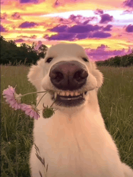
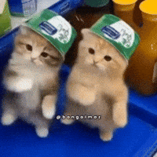

This project was about finding out who we actually matched with using our own DNA. There were three of us on this team. We did interviews before and after the experiment about who we thought we would match with and who we ended up matching with. This is how we got from a cheek swab all the way to a final answer.
Before we even started the lab work, our team sat down and talked about who we thought our matches would be. It is easy to guess based on who you look like or who you get along with, but that is not how DNA actually works. Going into this project we each had someone in mind, but we knew the science could prove us wrong. That part made the project interesting before we even touched a toothpick.

To get the DNA, our team started with a simple scrape. We gently rubbed a toothpick inside the cheek to collect cells. Then we swirled the toothpick into the extraction buffer to release the cells and heated the sample to 90 degrees. This burst the membranes and let the raw DNA out into the liquid. After that we moved a small amount of the sample into a Master Mix with primers and bases in it. Inside a PCR machine, the mixture heated and cooled 30 times. This split the DNA apart and rebuilt it over and over until we had billions of copies.
To sort it out, we poured a liquid gel into a mold, left wells at the top, loaded in our copied DNA, and ran an electric current through it. DNA has a negative charge, so the current pulled it through the gel. Small pieces moved faster and large pieces moved slower until they showed up as glowing bands under a blue light. After that we photographed the bands, used Photoshop to sharpen the images, and put everything into a spreadsheet to compare against the master list. When we got our results back, our teammate Obinna matched with people who were not even from the same place as her. This showed our team that race is not something biology actually backs up. Where someone is from does not tell you anything about their DNA.
This project taught our team a lot, but the biggest thing we walked away with was how much trust goes into following a process exactly. One small mistake in the extraction or the heating step could mess up the whole result. We learned to slow down and be precise instead of rushing to get to the end. That mindset carried into other projects after this one too.

The 21st century skill our team grew the most in was Accessing and Analyzing Information. Reading the gel results was not as simple as looking at where the bands lined up. We had to compare multiple samples and think about how distance connects to fragment size. We also had to make sure we were not just seeing what we expected to see. Going back and forth between the photos and the spreadsheet taught us how to actually analyze evidence instead of just collecting it.
Along with this site, I also put together a short film walking through the whole process from start to finish. It covers the thinking behind the project and shows the work step by step as it happened. If you want to see it, the link is below.
